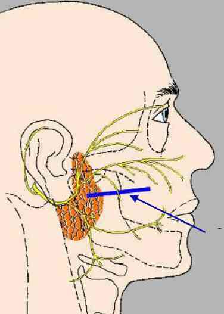
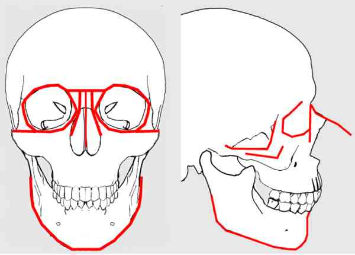
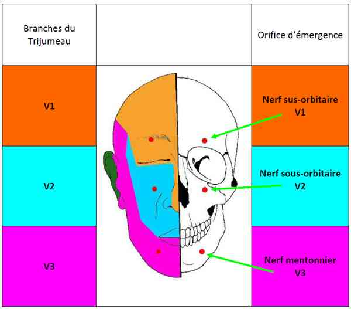
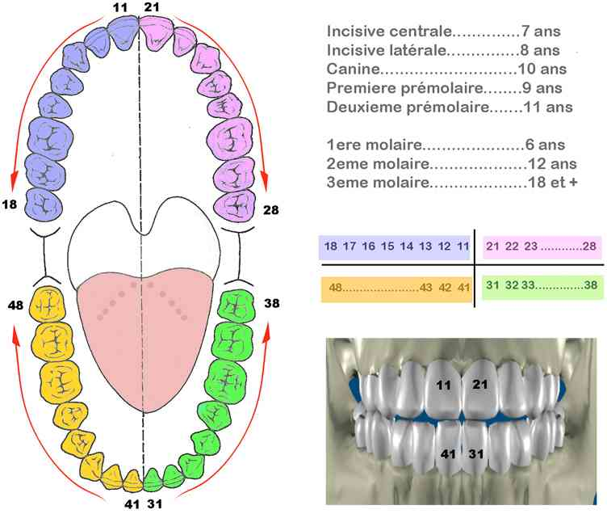
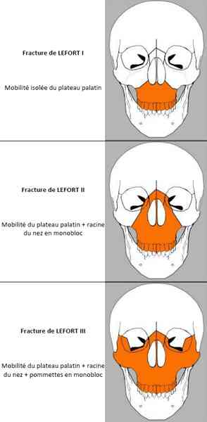
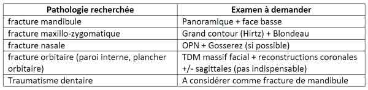
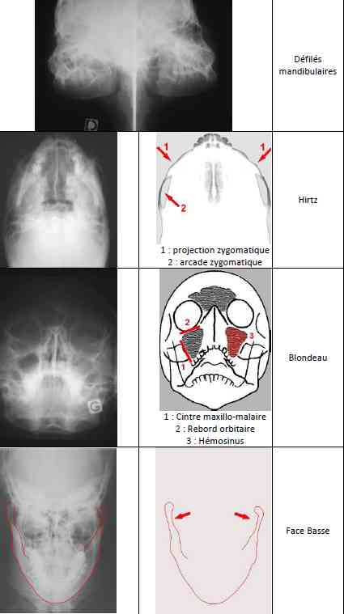

Bienvenue Sur Medical Education
Traumatisme facial
Spécialité : pediatrie / traumatologie /
Points importants
- Parfois spectaculaire mais rarement vital
Présentation clinique / CIMU
SIGNES FONCTIONNELS
- Sensation de craquement lors du choc
- Douleur spontanée
-
Gênes fonctionnelles :
-
manducatrice :
- impression de perte de l’articulé dentaire
- limitation d’ouverture de bouche
- déplacements dentaires
- pertes de dents
- mobilités dentaires
- désadaptation de prothèses dentaires
- difficultés de déglutition, etc.
-
visuelle :
- modification de l’acuité visuelle
- diplopie
-
respiratoire nasale :
- obstruction nasale uni ou bilatérale partielle ou complète
- perte d’odorat
- épistaxis
- phonatoire
-
manducatrice :
CONTEXTE
Terrain
- Le plus souvent, hommes jeunes (18–25 ans)
Traitement usuel
- Traitement anticoagulant, anti-aggrégant
Antécédents
- Troubles de la coagulation
Circonstances de survenue
- Accident de la voie publique, de rixes, accidents de sport, accidents domestiques
- Date et heure du traumatisme
- Point d’impact : latéro ou centro-facial
- Direction et intensité du choc
EXAMEN CLINIQUE
Savoir dépister immédiatement
-
Hémorragies massives :
- plaies vasculaires
- épistaxis ou plaie chez un patient sous anticoagulants
- plaie du scalp chez la personne âgée vue tardivement
- fracas facial hémorragique (1/3 médian de la face)
-
Asphyxie :
- glossoptose sur fracture bifocale de la symphyse mandibulaire
- corps étrangers (fragments de prothèses dentaires fracturées, fragments dentaires)
- caillots
Toujours éliminer des lésions associées à ne pas méconnaitre devant le tableau facial
- Lésions neuro-chirurgicales
-
Lésions oculaires :
- toujours ouvrir les paupières même si la contusion et l’œdème rendent le geste difficile
-
Lésions rachidiennes cervicales instables :
- tout traumatisé facial est un traumatisé du rachis cervical jusqu’à preuve du contraire
- Lésions viscérales
Examen clinique du traumatisé facial
Mixte : exo et endo-buccal
Exo-buccal :
-
inspection :
- plaies (+ scalp)
- contusions
- corps étrangers (fragments de parebrise, débris telluriques, graviers,…)
-
déformations :
- attention : sur la face, le développement de l’œdème est très rapide et masque rapidement les déformations osseuses sous-jacentes
-
écoulements :
- épistaxis, otorragie, rhinorrhée, otorrhée
-
examen oculaire : TOUJOURS ouvrir les paupières
- pupilles : photomoteur/consensuel
- recherche hémorragie sous-conjonctivale (fracture zygomatique et/ou plancher orbitaire)
-
examen oculomoteur :
- élévation/abaissement et latéralité du globe : recherche de limitation des mouvements par souffrance d’un muscle oculomoteur sur lésion sous-jacente
- recherche de diplopie
-
neurologique moteur (VIIème paire crânienne) : recherche une asymétrie (parésie ou paralysie faciale)
-  _922 Nerf facial
- froncer/relever les sourcils
- fermer les yeux
- gonfler les joues
- mettre la bouche en cul-de-poule
-
fosses nasales (rhinoscopie antérieure, après évacuation par mouchage doux des caillots de sang) :
- apprécie la perméabilité des fosses nasales
-
recherche :
- plaies muqueuses
- déformations ou déplacements de la cloison avec parfois extériorisation du cartilage septal fracturé
- hématome de cloison
-
palpation : douce et symétrique
-
reliefs osseux :
-  _923 Reliefs osseux de la face
- bilatérale et comparative, complète, de haut en bas, en finissant par la zone traumatisée
-
recherche des signes directs de fracture :
- déplacement osseux
- mobilité anormale
- douleur exquise
- perception d’une « marche d’escalier » au niveau d’un rebord osseux
- parfois, un emphysème sous-cutané qui signe la fracture d’une paroi d’une cavité aérienne (sinus maxillaire, labyrinthe ethmoïdal, sinus frontal)
-
examen neurologique sensitif symétrique :
-  _924 Innervation sensitive de la face
- recherche une hypoesthésie
- explorer V1, V2, V3
-
sensibilité faciale (nerf trijumeau : V) :
- V1 : sensibilité cornéenne et sensibilité cutanée (nez, front, paupière)
- V2 (rameau infra-orbitaire) : sensibilité cutanée (nez, joue, lèvre supérieure), muqueuse (gencive maxillaire) et dentaire maxillaire
- V3 (rameau alvéolaire inférieur) : sensibilité cutanée (lèvre inférieure et menton), muqueuse et dentaire mandibulaire
-
motricité faciale (nerf facial : VII) :
- parfois gêné par l’œdème
- évaluer la mobilité du front, du sourcil, des paupières, de l’aile du nez, de la lèvre, du peaucier du cou
-
reliefs osseux :
Endo-buccal :
-
Inspection :
- articulé dentaire : modification des rapports dentaires (les dents se touchent-elles comme d’habitude ?)
-
mobilité dentaire, perte dentaire, fracture dentaire : Noter +++ (médico-légal)
-  _925 Numérotation dentaire
- saignement, plaie
-
Palpation :
-
mobilité crânio-faciale
-  _926 Mobilité des structures osseuses en cas de fracture de Lefort
- douleur
-
mobilité crânio-faciale
Faire schéma des plaies
AU TOTAL
Fractures de la mandibule
-
Fracture du condyle :
- très fréquente, surtout chez l’enfant
-
circonstances :
- choc sur le menton, bouche entrouverte
-
examen clinique :
- plaie sous-mentonnière, très fréquente, étant parfois au premier plan
- douleur spontanée et à la mobilisation
- tuméfaction pré-auriculaire du côté fracturé avec parfois, ce qui est presque pathognomonique dans ce contexte, une otorragie
- impotence fonctionnelle mandibulaire : ouverture de bouche et propulsion mandibulaire limitées avec déviation vers le côté fracturé
-
articulé dentaire perturbé :
- béance controlatérale par contact molaire prématuré du côté fracturé
- déviation du point interincisif inférieur vers le côté fracturé
-
Fractures de la portion dentée et de l'angle de la mandibule :
- circonstances : choc sur la mandibule
- douleur, stomatorragie, sialorrhée et impotence fonctionnelle avec trismus antalgique
- modification de l’articulé dentaire par chevauchement, angulation ou décalage des fragments dentés dont le déplacement résulte de l’action combinée des muscles abaisseurs et élévateurs de la mandibule
- mobilité osseuse anormale avec plaie muqueuse entre les deux dents bordant le foyer de fracture
- signe de Vincent (anesthésie dans le territoire labio-mentonnier du V3) pour les fractures très déplacées intéressant le canal mandibulaire
Fractures de l'étage moyen de la face
-
Fractures latéro-faciales (fractures zygomato-maxillaires) :
-
circonstances :
- choc sur la pommette, parfois suivi d’une épistaxis homolatérale
- effacement de la pommette avec élargissement de l’hémiface traumatisée
- hémorragie sous-conjonctivale externe en flammèche
- décalage en marche d’escalier sur le rebord orbitaire inférieur avec douleur exquise
- en bouche, rupture de l’arrondi harmonieux du cintre zygomato-maxillaire fracturé en « coquille d’oeuf » avec douleur exquise en regard
- parfois, mobilité nette du corps du zygoma, emphysème sous-cutané de la paupière inférieure
- sensibilité diminuée dans le territoire du nerf sous-orbitaire, entraînant une hypo ou paresthésie de la joue, de l’aile du nez, de la lèvre supérieure et de l’arcade dentaire
-
fracture isolée de l’arcade zygomatique :
- déformation uniquement au niveau de l’arcade, la pommette étant restée en place
- trismus souvent associé
-
fracture isolée du plancher de l’orbite :
- résulte d’un choc direct sur le globe oculaire. Le contenu orbitaire fait issue à travers le plancher d’orbite (hernie graisseuse éventuellement associée à une hernie musculaire)
- énophtalmie
- diplopie verticale secondaire à l’incarcération des tissus intra-orbitaires
-
circonstances :
-
Fractures centro-faciales :
-
fractures du nez et de la cloison nasale :
- circonstances : choc sur le nez avec sensation de craquement
- douleur parfois syncopale
- épistaxis bilatérale
- pyramide nasale déformée avec obstruction nasale objectivée au miroir de Glatzel
-
la rhinoscopie antérieure peut montrer :
- soit un simple oedème de la muqueuse
- soit un hématome de la cloison
- soit une plaie muqueuse laissant apparaître le cartilage septal fracturé et dévié responsable pour partie de l’obstruction nasale
-
fractures du complexe naso-ethmoïdo-maxillo-fronto-orbitaire :
- circonstances : choc violent sur la région nasale
- épistaxis
- obstruction nasale
- élargissement avec recul entre les orbites de la pyramide nasale
- ecchymoses palpébrales en « lunette », très évocatrices d’une fracture du labyrinthe ethmoïdal
- oedème des paupières, d’installation précoce
- diplopie statique et/ou dynamique par atteinte de l’oculomotricité
- méplat frontal par embarrure dans les fractures étendues à l’os frontal
- éventuelle énophtalmie secondaire à la fracture de la paroi médiale de l’orbite
-
fractures du nez et de la cloison nasale :
-
Fractures horizontales ou fractures occluso-faciales :
-
fractures de Lefort I :
- détache le plateau palato-dentaire du reste du massif facial, en brisant le septum nasal et, des 2 côtés, la paroi latérale de la fosse nasale, les parois antérieure et postérieure du sinus maxillaire et le processus ptérygoïdien
- circonstances : choc sous-nasal
- impotence fonctionnelle
- douleur faciale basse s’exagérant à la morsure
- mobilité de l’ensemble du maxillaire déclenchant une douleur exquise
- parfois, au fond du vestibule, une ecchymose en fer à cheval
- trouble de l’articulé dentaire avec béance antérieure et contacts molaires prématurés par bascule en bas et en arrière du maxillaire
- mobilité de la région dento-alvéolaire par rapport à la partie haute du massif facial
- disjonction intermaxillaire éventuellement associée (espace interincisif médian, associé à une déchirure de la muqueuse palatine ou à un simple hématome de la muqueuse)
-
fracture de Lefort II :
- détache le plateau palato-dentaire et la pyramide nasale du reste du massif facial, en brisant de part et d’autre l’os nasal, le processus frontal du maxillaire, la paroi médiale de l’orbite, le plancher d’orbite, les parois antérieure et postérieure du sinus maxillaire et le processus ptérygoïde en arrière
- les deux pommettes restent en place
- enfoncement de la région nasale dans la partie moyenne de la face entre les orbites
- parfois mobile avec les mouvements de déglutition ou lorsque le blessé parle
- ecchymose palpébrale en lunette habituelle, évocatrice d’une atteinte des labyrinthes ethmoïdaux
- douleur à la palpation de la racine du nez, du rebord infra-orbitaire, du vestibule
- mobilité du maxillaire et de la pyramide nasale désolidarisés du reste du massif facial
- hypoesthésie ou anesthésie quasi constantes dans les territoires des V2
- béance incisive par contacts molaires prématurés
-
fracture de Lefort III :
- exceptionnellement isolée
-
souvent associée à d’autres fractures :
- latéro-faciale bilatérale
- centro-faciale
- occluso-faciale de type Lefort I ou II
- fracture mandibulaire
- fracture alvéolo-dentaire
- disjoint, dans son ensemble, le massif facial (maxillaire, os zygomatiques, région nasale) de la base du crâne, en brisant de part et d’autre l’os nasal à la jonction fronto-nasale, le processus frontal du maxillaire, les parois médiale et latérale de l’orbite, le processus temporal de l’os zygomatique, le processus ptérygoïde
- enfoncement de la face avec oedème et ecchymose donnant un « faciès lunaire »
- effondrement de la pyramide nasale
- mobilité du massif facial entier (os zygomatiques compris) par rapport au crâne
- épistaxis, stomatorragie
- mobilisation difficile du maxillaire entraînant l’ensemble du squelette facial sus-jacent, désolidarisé de la base du crâne
- trouble de l’articulé dentaire avec béance incisive et contacts molaires prématurés, l’ensemble du massif facial ayant glissé sous la base du crâne
-
fractures de Lefort I :
-
Fractures du bandeau frontal :
- concernent le toit de l’orbite et le sinus frontal
- déformation en cupule
- possible pseudo-ptosis
- trouble sensitif frontal
-
Fracture horizontale occluso-faciale (Lefort) :
- troubles d’occlusion (recul et mobilité de l’arcade maxillaire)
-
association possible à une :
- fracture zygomatique
- disjonction intermaxillaire
- fracture du nez
- rare fracture haute (Lefort III) avec risque de brèche ostéoméningée
EXAMENS PARACLINIQUES SIMPLES
Bandelette urinaire
- Test à la bandelette sur écoulement clair (rhinorrhée, otorrhée)
- Si positif au glucose = LCR => brèche méningée
Hémoglobine capillaire
- Si pâleur, saignement extériorisé important
SpO2
CIMU
Tri 1
- Détresse respiratoire, neurologique ou saignement majeur
Tri 2
- Epistaxis sans retentissement hémodynamique majeur
- Hypoxémie modérée
Signes paracliniques
BIOLOGIQUES
- Bilan préopératoire si indication
IMAGERIE
Incidences à connaître en fonction de la localisation traumatique

_920
Tableau
Incidences à connaître en fonction de la localisation traumatique
Remarques
- TDM sans injection et coupes millimétriques
- Crâne face et profil, totalement inutile en traumatologie maxillo-faciale
-
Si polytraumatisme :
- TDM massif facial + mandibule (du vertex du crâne jusqu’à l’os hyoïde)
-
Si traumatisme crânio-facial :
- coupes fines sur le crâne (sinus frontal)
Limitations techniques
- Panoramique : nécessite un patient valide
- Si panoramique indisponible : TDM coupes axiales + reconstructions coronales sur condyles mandibulaires
- Hirtz : contre-indication absolue en cas de traumatisme du rachis cervical non exploré (nécessite l’hyperextension cervicale)
- Patient invalide, en brancard… : TDM centré sur le massif facial ou la mandibule

_921
Examens radiographiques dans le traumatisme facial
Traitement
TRAITEMENT PREHOSPITALIER / INTRAHOSPITALIER
Stabilisation initiale
-
Hémorragie extériorisée :
- stomatorragie, épistaxis, otorragie, plaie
- compression ou clampage du vaisseau
-
épistaxis :
- tamponnement antérieur, complété par un tamponnement postérieur si nécessaire
- si persistance du saignement => artériographie avec embolisation
- pose d’une voie veineuse périphérique de bon calibre avec NaCl 0,9%
-
Détresse respiratoire :
-
secondaire à :
- obstruction des voies aériennes supérieures par des caillots, corps étrangers, prothèses dentaires
- diminution de calibre de ces voies aériennes (hématome, glossoptose lors de fracture mandibulaire, en particulier bisymphysaire déplacée)
- inhalation de sang, de corps étrangers (dent)
- aspiration
- oxygénothérapie
- si nécessaire, intubation voire trachéotomie
-
secondaire à :
- Traitement antalgique :
- Fonction du niveau d’intensité douloureuse
Suivi du traitement
- Statut vaccinal (SAV, VAT)
- Hygiène buccale
- Alimentation liquide
- Antibiothérapie à discuter au cas par cas
Surveillance
CLINIQUE
- FR, TA, FC, SpO2
- Conscience
PARACLINIQUE
- Hémoglobine capillaire éventuelle
Devenir / orientation
CRITERES D’ADMISSION
Réanimation
- Toute détresse vitale associée
Service spécialisé
- Toute plaie ou fracture nécessitant intervention chirurgicale
CRITERES DE SORTIE
- Plaies faciales simples, des traumatismes dentaires isolés
- Fractures de la région condylienne
ORDONNANCE DE SORTIE
- Antalgiques
- Kinésithérapie mandibulaire en propulsion et latéralité dès sédation des douleurs (fractures de la région condylienne)
Bibliographie
- Duhamel P., Gauthier J., Teyssères N., Giraud O., Denhez F., Bey E. Examen d’un traumatisé facial. EMC (Elsevier Masson SAS, Paris), Stomatologie, 22-068-A-05, 2008.
Auteur(s) : Arnaud RIGOLET